Juan Gonzalez:PhD Thesis

| Página en Español |

Contenido
[ocultar]Modular Robotics and Locomotion: Application to Limbless robots
- Description: European PhD Thesis
- Author: Juan González Gómez
- Supervisor: Dr. Eduardo Boemo Scalvinoni
- University: Escuela Politécnica Superior. Universidad Autónoma de Madrid
- Date (oral defense): 21-Noviembre-2008
- Evaluation committee:
- Chairman: Dr. Vicente Matellán, Universidad de León
- Member: Dra. Cristina Urdiales, Universidad de Málaga
- Member: Dr. Jose María Cañas, Universidad Rey Juan Carlos
- Member: Dr. Houxiang Zhang, Universidad de Hamburgo (Alemania)
- Secretary: Dr. Miguel Ángel García García, Universidad Autónoma de Madrid
- European evaluators:
- Dr. Jianwei Zhang, Universidad de Hamburgo (Alemania)
- Dr. Andrés Pérez-Uribe, Universidad de Canton du Vaud (Suiza)
- Evaluator of the computer science department of the UAM
- Dr. Francisco Gómez Arribas, Universidad Autónoma de Madrid
Preface by Dave Calkins
Snakes aren't the kind of cuisine most people look for when ordering, but the speciality of the house was Juan González-Gómez's amazing servo-driven snakebot. All snake robots I've ever seen --even Gavin Miller's amazing bots- cheat. They replicate a snake's motion, be it sinusoidal, caterpillar, or side-winding, but always with wheels on the bottom to eliminate friction and help the bot along. Gonzalez, however, perfected a system that most closely replicates how snakes really move. There are no wheels on his robots. Just his own servo housings. Watching a snake robot skitter across the floor is always cool. But when you pick up Juan's bot and realize that it's got no wheels and can still move the same way any snake can, you're truly awed. Even more inspiring is the fact that his bots are totally modular. You can have as few as two modules or as many as 256 -- good for both garter snakes and anacondas.
Dave Calkins
President of the Robotics Society of America,
Lecturer of the Computer Engineering Program at San Francisco State University
Founder of ROBOlympics/RoboGames - the International all-events robot competition
Abstract

This thesis deals with the locomotion of modular robots concentrating specifically on the study of configurations with one dimensional topology, that we call apodal robots. The problem we face is how to co-ordinate the movement of the articulations of these robots so that they can move as easily in one as in two dimensions.
One of the biggest challenges is to develop a robot that is as versatile as possible and is able to move from one place to another over various types of terrain, even the roughest and most broken. This is of special importance where the environment is unknown, such as the exploration of the surface of other planets, navigation in hostile environments or in search and rescue operations.
To increase versatility of movement, modular robotics proposes the creation of robots based on basic modules. Each configuration would have different locomotive characteristics that must be studied. If also the modules were self configuring, the robots could constantly be selecting the optimum configuration for each environment.

One type of controller used is bio-inspired, based on CPG (Central Pattern Generators), these are specialised neurones that produce rhythms that control muscle activity in living beings. In the stationary state they act like fixed frequency oscillators which permits them to be substituted by a simplified model formed by sinusoidal generators. The advantage is that they are extremely simple to implement and require very few resources for their production. What is more they can be produced employing different technologies: software, digital circuits or even electro-analogical.
In this thesis a classification of the modular robots is established, according to their topology and type of connection and the hypothesis is presented to use sinusoidal generators as locomotion controllers for the apodal modular robots with one dimensional topology, of the groups pitch-pitch and pitch-yaw. The results show that this simplified model is viable and the movements obtained are very gentle and natural. The robots can move using at least five gaits. Some of them, such as rotation, are original, and as far as we know, have not been studied before nor implemented by other investigators.

Another problem that presents itself is that of the minimum configurations. To find the robots with the least number of modules possible that can move in one or two dimensions. Two minimum configurations capable of this and the relationship between their parameters have been found.
It has been shown that the answers found to the problem of co-ordination are valid for their use in real robots. They have been tested in four prototypes of apodal robots constructed on the basis of the union of Y1 modules, designed specifically for this thesis. The verifying of robots with a different number of modules has been carried out using the simulator developed for this purpose.
Finally the knowledge about the locomotion of apodal robots of the study groups has been resumed in 27 fundamental principles.
License
| |
Download
| File | Description |
|---|---|
| Thesis_PhD_Juan_Gonzalez_Gomez-2008.pdf | PhD Thesis, (in PDF) |
| On-line in Scribd | PhD Thesis, Read it on-line in Scribd |
| Thesis_PhD_Juan_Gonzalez-2008-src.zip | PhD Thesis sources. Written using Lyx 1.4.3. Pictures done with Inkscape 0.44 |
| tesis-JGG-transparencias.pdf | Presentation slides, in PDF |
| Tesis-JGG-transparencias-src.odp | Presentation slides sources. For OpenOffice |
| Tesis-JGG-transparencias-figuras.zip | Presentation pictures drawings. Done with Inkscape 0.44 |
Robot prototypes built
| 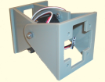 |
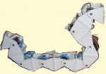 |
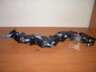 |
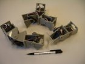 |
| Módulos Y1 | Cube Revolutions | Hypercube | MiniCube |


Videos
Experiments with real robots
| 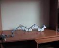 |
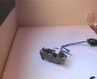 |
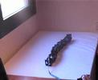 |
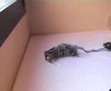 |
| Watch VIDEO Locomotion in 1D |
Watch VIDEO Locomotion in 1D |
Watch VIDEO Locomotion in 2D |
Watch VIDEO Locomotion in 2D |


Simulations
| 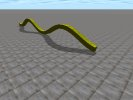 |
Watch VIDEO Simulation of the locomotion in a straight line of a 32 module pitch-pitch apodal robot |
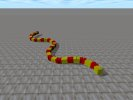 |
Watch VIDEO Simulation of the locomotion in 2D of a 32 module pitch-yaw apodal robot. The Eight locomotion gaits found by means of genetic algorithms are shown |
| 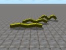 |
Watch VIDEO Simulation of the Cube Revolutions robot (8 modules, pitch-pitch group). The changes in locomotion when different parameters are shown. |
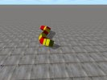 |
Watch VIDEO Simulation of the Hypercube robot (8 modules, pitch-yaw group). Different locomotion gaits are shown. |
| 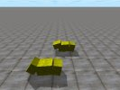 |
Watch VIDEO Simulation of the minimum configuration Minicube-I (2 modules, pitch-pitch group) |
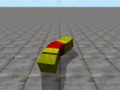 |
watch VIDEO Simulation of the minimum configuration Minicube-II (3 modules, pitch-yaw group) |
| 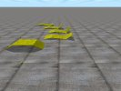 |
watch VIDEO Simulation of the wired model of the PP minimum configuration (pitch-pitch). |


Cube Simulator 1.0
| 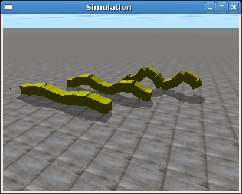 |
Cube Simulator. Software for the simulation, control and data adquisition of the locomotion of the modular robots. All the scripts developed for performing the experiments on this thesis are included. The development platform is a Debian Gnu/Linux Etch box. |

Logbook

News
- 23/Jan/2010: The translation is finished!!. Final version published!
- 09/Jan/2010: Chaters 7 and 8 translated and published!
- 10/Dec/2009: Chapter 6 translated and published!
- 18/Oct/2009: Chapter 5 translated and published!
- 2/Sep/2009: Chapter 4 translated and published
- 23/July/2009: A Prelimiray version of translated chapters 1, 2 and 3 has been published
- 24/March/2009: Abstract added
- 6/March/2009: This page is started